The last day
I was up early and on the road by 6:30. I had stripped the bike down to the bare minimum to the point that the aero bar wouldn't stay up because the handlebar bag that had been jammed underneath it was gone. Wyle E got out a strap and some rope and we were streamlined again. Leaving Silver City there was some rain but nothing to worry about. There was a small hill in the initial stages of getting out of Silver City. After that it was downhill for about 70 miles.
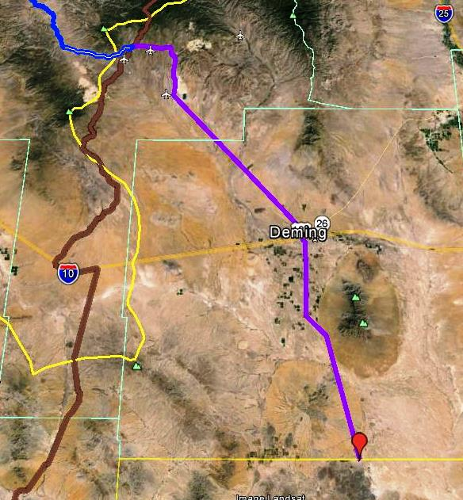
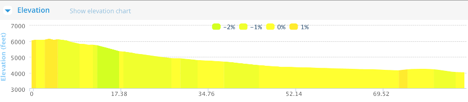
 Initialy heading east into the clouds and some rain.Stopped near Hurley to get this picture
Initialy heading east into the clouds and some rain.Stopped near Hurley to get this picture
This was the last set of mountains I had to get past.

Rain in the mountains to the east
1
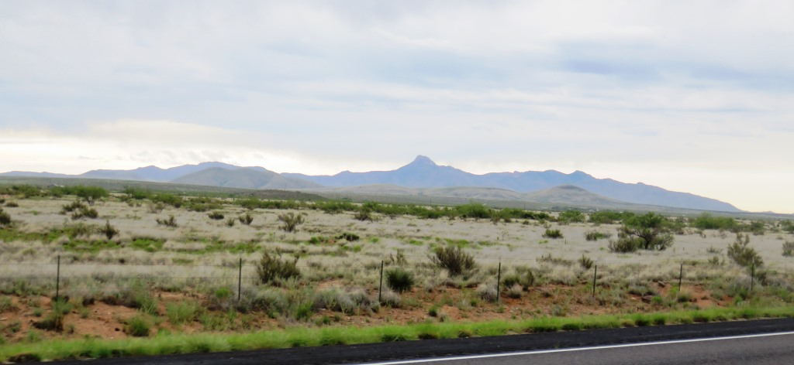
The terrain was tilted my way
2
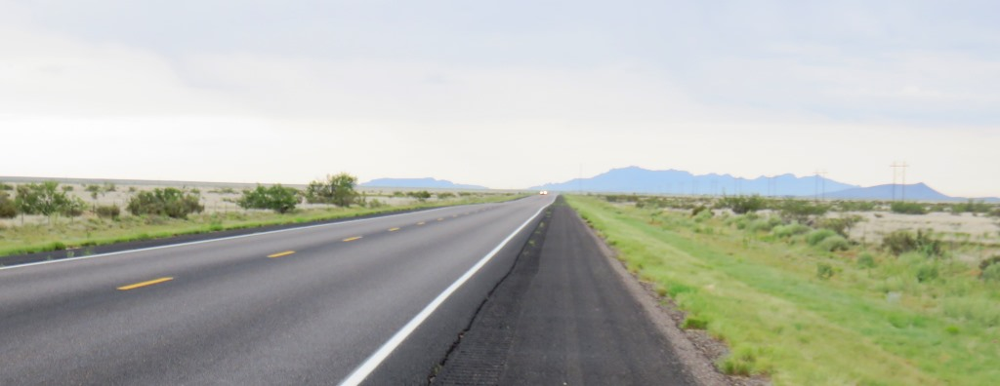
Heading south and hoping the rain stays east.
3
Without any gear and having a slight downhill I was cranking out the miles and staying close to 20 MPH.
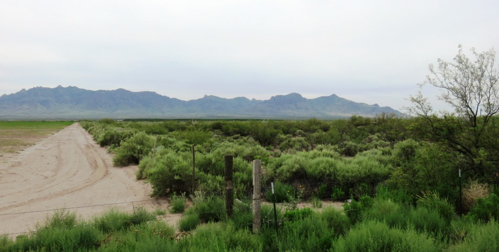
I stopped in the town of Denning at just after 10am with 35 miles to go. I got it into my head that it was important to get to the Border by noon.
 10 was Danny Carter not Phil Rizzuto.
10 was Danny Carter not Phil Rizzuto.
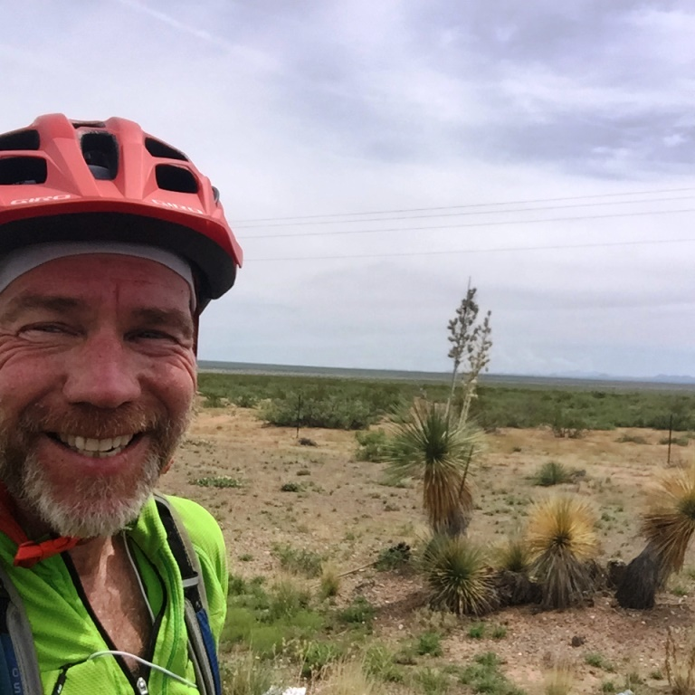
Easy to smile at this point.Matching the mile post with a number of a Yankee player. I was a bit crazed at this point!! I didn't have one for 11 but I also didn't see every mile post.
I can see the finish line
 The end is in site
The end is in site
On the US side of the border there were a couple stores and I saw the Dollar General store where I was to meet my ride. The border crossing took less than a minute and once I was passed the armed Mexican soliders it was off to the Pink Store.
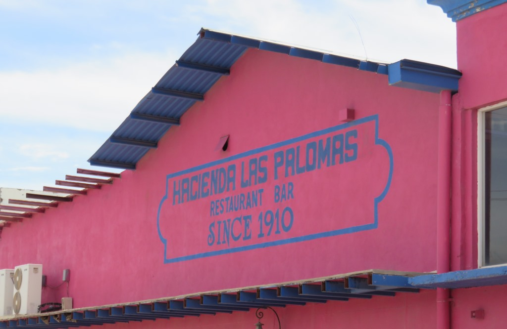
The pink store wasn't hard to find.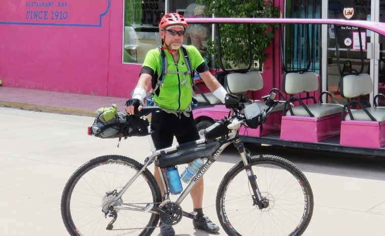
The wary Gringo was trying to figure out what to do next. Possing for figures in front of the Conquistador statue.
Possing for figures in front of the Conquistador statue.
Margarita at the Pink Store
After rebuffing the first Mexican who tried to lure me off the street I realized the plaza behind the Pink Store was the perfect place to get a margarita and some chips.
 It was in the shade
It was in the shade
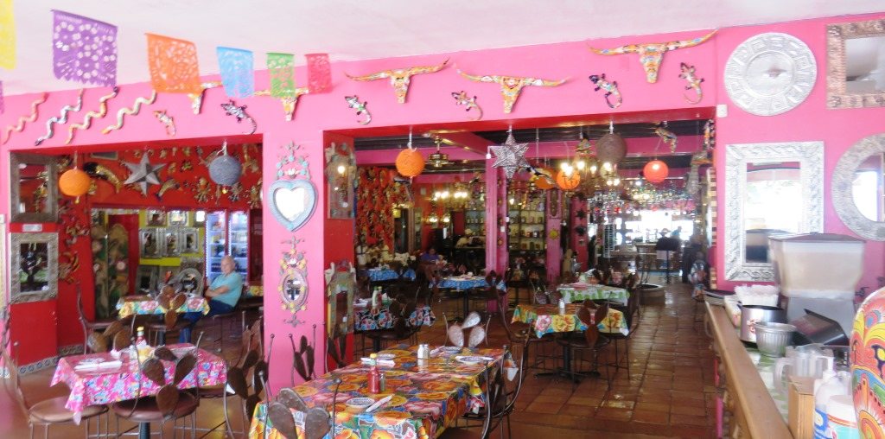
And the inside was just a little too busy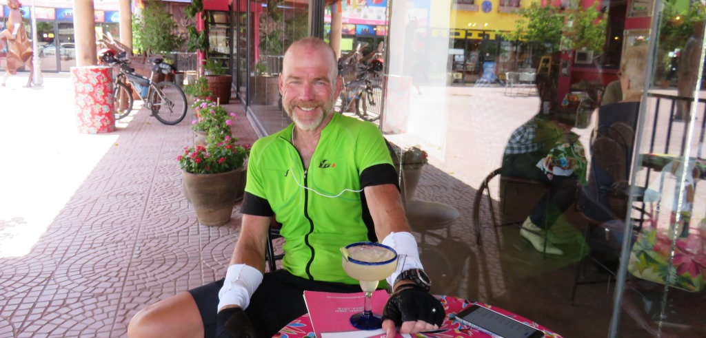
I couldn't get the smile off my face.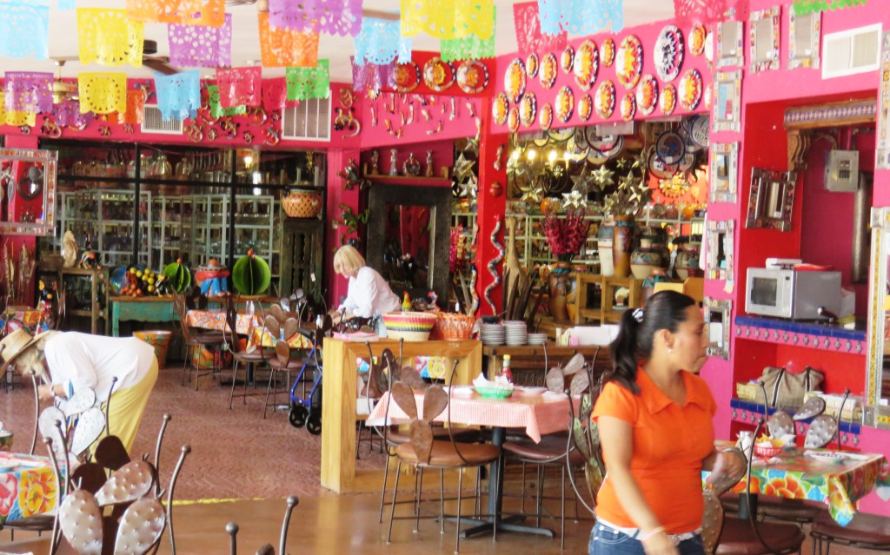
Did I mention that the inside was a little busyHaving traveled the final 87 miles in about 5.5 hours I finally could relax. I took a few minutes to do so. I called Kathy and just sat. It felt good. I was extremely happy that I didn't need to ride the bike any more.
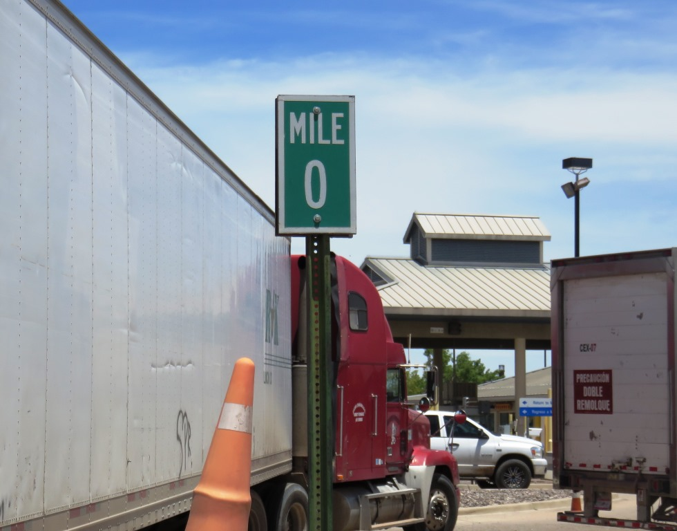
The border crossing was a busy place but it didn't take long and they let me back into the United States. Reflecting on the path I took now that it was completed really put it in perspective.
The odometer on my bike read 2,303 miles. This was my second odometer because the first one stopped working before the 2nd or 3rd day. I bought this one in Fernie, BC. This one also stopped working for a period in Grand Teton NP.
July 14 - 87 miles - Silver City to Porto Palomas, Chihuahua, Mexico
I had arranged for a guy from Hachita, NM to pick me up and he was waiting at the Dollar Store when I crossed back over the border. He lives along the route and had tried to convince me to go to Antelope Wells instead of Palomas. This would have made it easier for him but also would have been another 40 miles for me. We had a nice chat on the way back to Silver City and I was back at the Comfort Inn by 3:30pm.
See full screen map To go places and do things that I've never done before– that’s what living is all about.Text by Jim O'Brien . Photographs by Jim O'BrienTD on Flickr.